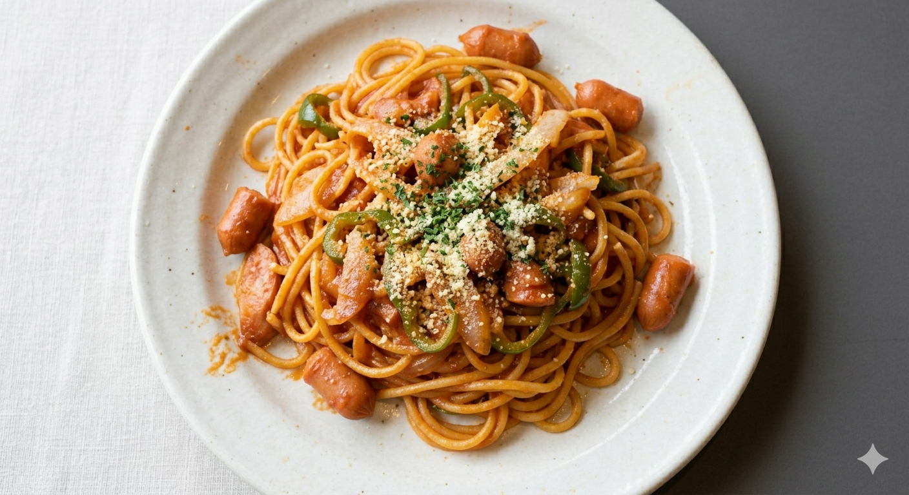
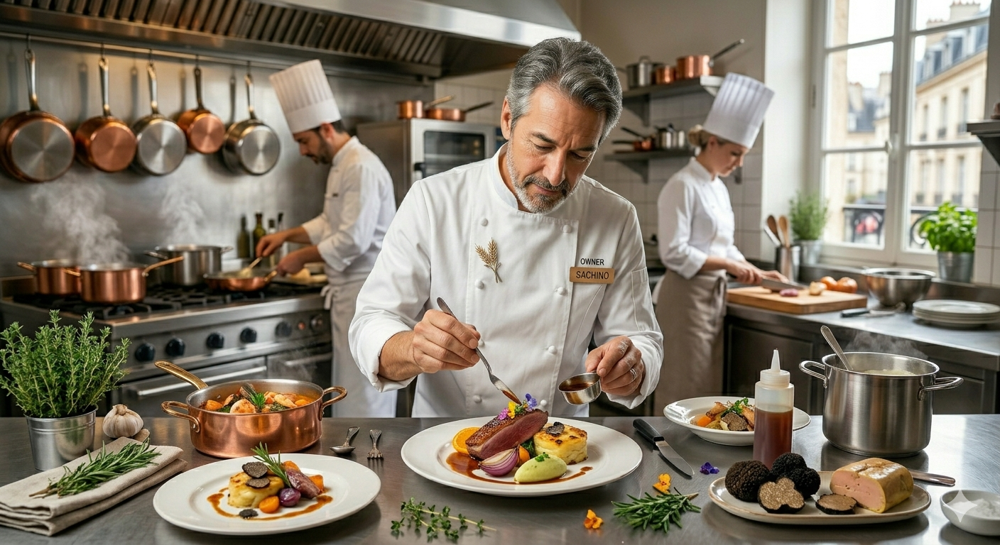

＼ 予約・お問い合わせはこちら ／
11:00 - 20:00
日曜定休
店主の石川慎也です。私たちが提供したいのは単なる食事ではありません。 フレッシュなトマトの香りが立ち上るナポリタンを囲む笑顔、そして壁一面500種のウイスキーから自分だけの一杯を見つける至福の時間。 大学が近いこの場所で、学生から地元の方まで、第二の我が家のようにくつろげる空間を守り続けています。
店主：石川 慎也 (Shinya Ishikawa)

REAL VOICE
「フレッシュなトマトを使った完成された味。これで1,500円は納得の値段です。」
「30分近くテレワークしましたが嫌な顔ひとつせず。道を教えてくれたりと親切でした。」
「ウイスキーのボトルが並ぶお洒落な店内。お酒を飲みながら食事を楽しむお店。」
「皮はパリッと、香草が効いて香ばしいチキンソテーも絶品。また寄らせていただきます。」
あったらいいなをカタチに！現在準備中の新サービス
「どの味も美味しそうで決められない…」そんなお悩みにお応えします！豊富な種類のナポリタンメニューから、お好きな2種類を贅沢にワンプレートへ盛り合わせた夢のセットが登場予定です。
岩手県立大学をはじめ、近隣の学生さん・お腹いっぱい食べたい皆様を大応援！平日のランチ・ディナー限定で、自慢のナポリタンを大盛りでガッツリ楽しめる特別サービスを準備中です！